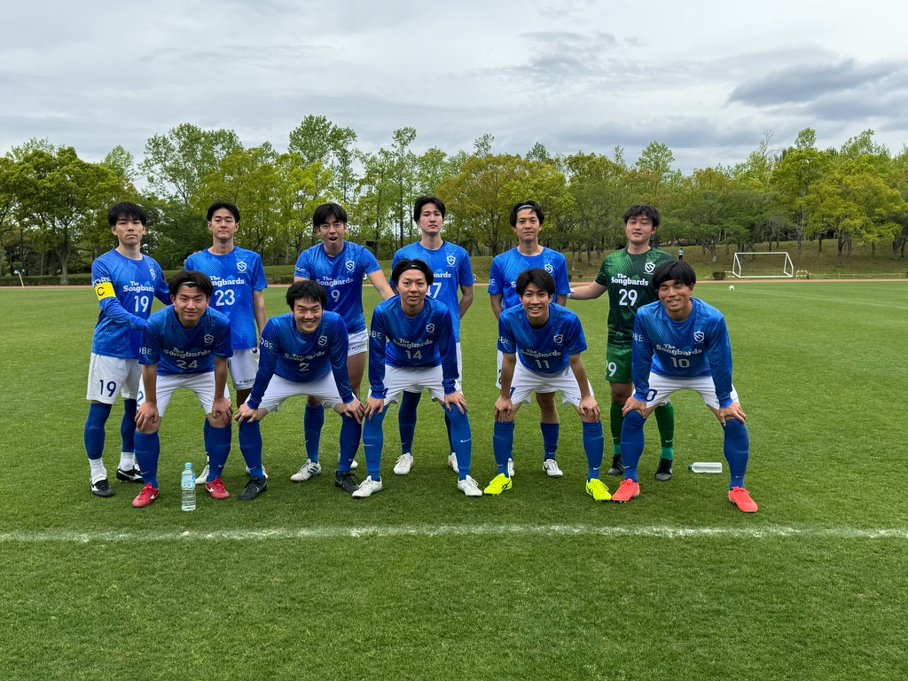
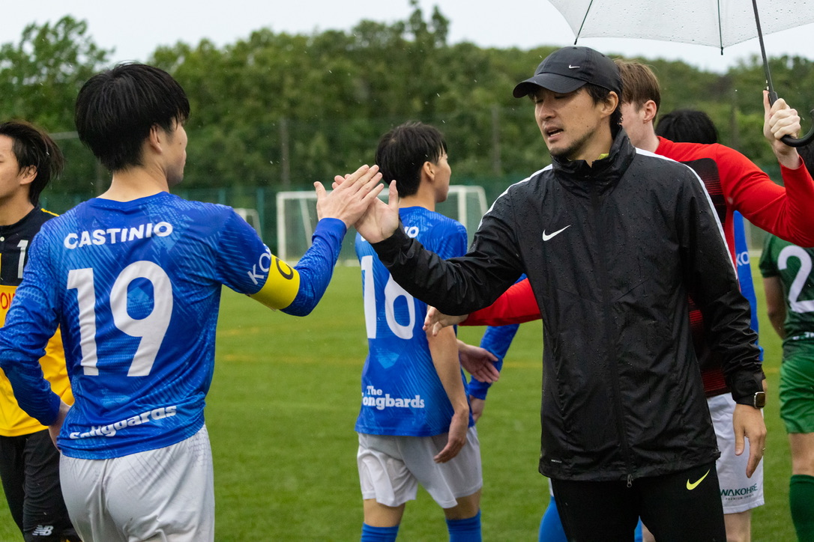

ABOUT THE CLUB
チーム紹介
楽しく真剣に。仲間とのコミュニケーションを大切に。

FC CASTINIO
この仲間と、
サッカーを続けていく。
FCカスティーニオは、神戸市リーグに所属する社会人サッカーチームです。神戸市内を中心に、土日に週1回程度活動しています。
大切にしているのは、楽しく真剣にプレーすること。そして、チームメイトとのコミュニケーションです。
公式戦、練習、練習試合、チーム行事。サッカーを通じた私たちの活動を、このホームページで紹介していきます。
OUR VALUES
真剣さも、楽しさも。
声を交わすことから。
一つひとつのプレーに真剣に向き合いながら、サッカーを楽しむ。チームメイトとの会話や声かけを大切にして、一緒にプレーする時間を積み重ねていきます。

CLUB INFORMATION
チーム概要
| チーム名 | FCカスティーニオ |
|---|---|
| 所属 | 神戸市リーグ |
| 活動地域 | 神戸市内 |
| 活動日・頻度 | 土日・週1回程度 |
| チームカラー | 青・赤 |
| 連絡窓口 | InstagramのDM・お問い合わせフォーム |